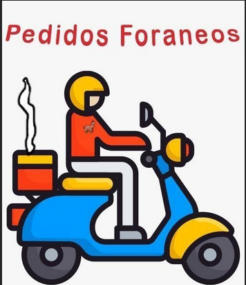

Integrantes:
- Samantha Guerrero 6618
- Bryan Tuglema 6843
- Edgar Amanta 6812
- Nelson Yunga 6484
- Sebastián Játiva 6695
- Andrés Alcoser 6760
Inovasoft
Vamos a presentar la documentación sobre nuestro proyecto software que se llama "Pedidos Foreanos" que es una aplicación movil para pedir comidas a domicilio
Definición del Alcance del Proyecto
En este apartado se presentara los primeros pasos para la definición del proyecto software en el cual requiere que realicemos lo escencial el analisis del negocio, requisitos del producto a crear
Ir a documentaciónPlanificación del Proyecto
Este apartado se trata de como planificamos los artefactos del proyecto de software y donde estan los planes que tendran el proyecto
Ir a documentaciónEjecución, Monitoreo y Control de Proyecto
Esta fase es donde se ejecutara todos los artefactos del proyecto, se monitorea si los artefactos esta ejecutando de manera correcta sin afectar al proyecto y por ultimo se realiza los controles respectivos del comportamiento del proyecto.
Ir a documentaciónCierre del Proyecto
Este apartado es el final del proyecto en donde se da cierre a todo los artefactos y donde se entrega el producto final.
Ir a documentación